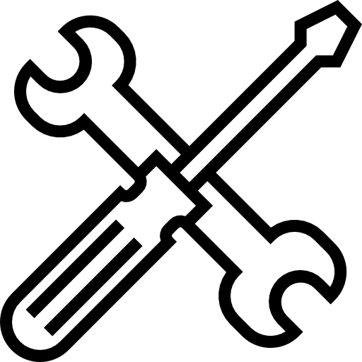

Mantenimiento
Ofrecemos servicios de mantenimiento especializados para asegurar que tu coche esté siempre en perfecto estado.

Mantenimiento Mecánico
Servicios de reparación y ajustes de motor, frenos, y otros componentes esenciales para mantener tu coche en óptimas condiciones.
Revisión Eléctrica
Diagnóstico y reparación del sistema eléctrico, garantizando un funcionamiento seguro y fiable de tu coche clásico.

Detallado y Restauración
Cuidamos cada detalle en la restauración de la pintura, interiores, y acabados para preservar el aspecto original del vehículo.